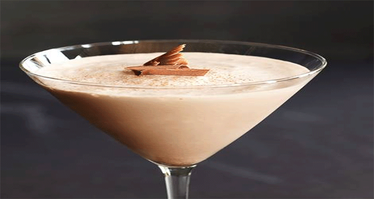

| Mis recetas Recetas Verano Recetas Invierno Recetas Primavera |
Esta pagina web muestra algunas recetas para tomar durante el verano  Alexander: cóctel digestivo por las propiedades digestivas del coñac o brandy: 3 cl de coñac o brandy 3 cl de crema de cacao 3 cl de nata liquida Agitar y colar en un vaso frío de coctel. Espolvorear nuez moscada o canela por encima. |
|---|